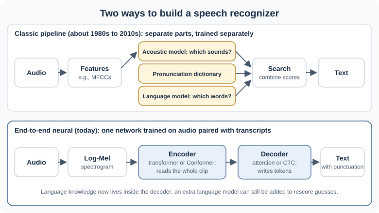
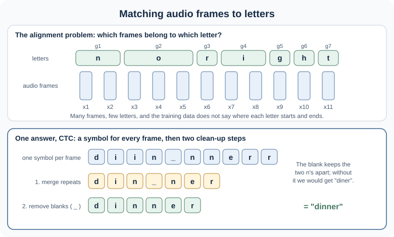
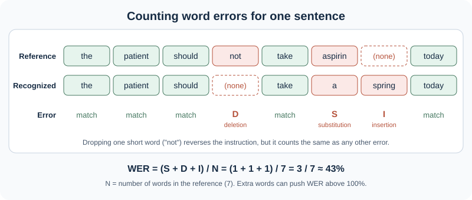

11.2 Speech Recognition: From Signal to Text#
Reading 11.1 turned speech into a grid of numbers, the log-Mel spectrogram. This reading asks:
How does a model turn that grid into text, and how do we know whether the text is good enough to use?
By the end of these notes you should be able to:
describe the input and output of automatic speech recognition (ASR), and tell it apart from related speech tasks
explain why recognizing speech is hard, using concrete examples
describe the main stages of a classic recognizer and of a modern neural one
explain the alignment problem and how models deal with it
compute and interpret the word error rate (WER), and name its limits
explain how recording conditions, speakers, and responsible-use concerns affect a speech system
We will reuse one running example: a voice note from a clinic.
“The patient should not take aspirin today.”
1. What Speech Recognition Does#
Note
Connecting the dots. You know: how speech becomes a log-Mel spectrogram (Reading 11.1). New problem: turning that signal into words. Next: what the task is, and which neighboring tasks are often confused with it.
Automatic speech recognition (ASR), also called speech-to-text, maps an audio waveform to the sequence of words that was spoken [JM26d] (§16.1). The input is audio; the output is text, usually with punctuation and capital letters added.
You meet ASR in captions on videos and live meetings, dictation on phones, voice assistants, meeting summaries, call-center analytics, and tools for people who cannot type easily. In data science, ASR is often the first step of a pipeline: once speech is text, the methods from earlier weeks (sentiment, topics, classification, retrieval) can be applied to it.
ASR is one of several speech tasks. They are easy to mix up, so here they are side by side:
Task |
Input → output |
Example |
|---|---|---|
Speech recognition (ASR) |
speech → text in the same language |
captions for a lecture |
Speaker diarization |
speech → who spoke when |
“Speaker 1: 0:00 to 0:12, Speaker 2: 0:12 to 0:30” in meeting notes |
Speech translation |
speech in one language → text in another |
a Spanish interview turned into English text |
Text-to-speech (TTS) |
text → speech |
a screen reader, a navigation voice |
Diarization does not say what was said, only who said it; it is usually combined with ASR [JM26d] (§17.5). Some models, such as Whisper, can both transcribe and translate into English [RKX+23].
TTS faces the reverse problem of ASR. Before it can speak, it must decide how text should be said, and the same characters can be read in different ways (example from an earlier edition of Jurafsky and Martin’s TTS chapter):
Text |
How it is read |
|---|---|
“The European economy in 1750” |
seventeen fifty |
“The password is 1750” |
one seven five zero |
“1750 dollars” |
seventeen hundred and fifty, or one thousand seven hundred and fifty |
Keep this example in mind: when we score a transcript in Section 5, “1750” and “seventeen fifty” will count as different words unless we decide otherwise.
2. Why Speech Recognition Is Hard#
Note
Connecting the dots. You know: speech has no gaps between words and every speaker sounds different (Reading 11.1). New problem: how these facts turn into recognition errors. Next: the main sources of difficulty, with numbers.
The same sounds, different words#
Very different word sequences can sound almost identical. Listeners, and recognizers, decide using context:
Kind of ambiguity |
Could be heard as |
or as |
|---|---|---|
Sounds and word boundaries |
“Let us pray” |
“Lettuce spray” |
Grammar |
“Meet her at the end of Main Street” |
“Meter at the end of Main Street” |
Meaning |
“Is the baby crying?” |
“Is the bay bee crying?” |
Wider context |
“It is easy to recognize speech” |
“It is easy to wreck a nice beach” |
Some information is lost in any transcript. “I’m flying to Chicago tomorrow” and “I’m flying to Chicago tomorrow” stress different words and answer different questions, but their transcripts are identical. (Examples adapted from Michael Collins’s speech recognition lecture slides, Columbia University.)
What makes a recording harder#
Speech recognition is much easier in some conditions than in others. The main factors are [JM26d] (§16.1):
Speaking style. People reading aloud or talking to a machine speak slowly and clearly. People talking to each other speak fast, overlap, and leave sentences unfinished.
Channel and noise. A close microphone in a quiet room is easy; a distant microphone at a dinner party, in a car, or on a phone line is hard.
Speaker. Systems work best for the accents and dialects that dominate their training data. Regional and ethnic dialects, non-native accents, children, older adults, and people with speech disorders are often recognized less accurately.
Vocabulary. Everyday words are easy; drug names, product names, local place names, and technical terms are hard.
Language. There are about 7,000 languages, and most have little transcribed audio. Many speakers also switch between languages mid-sentence (code-switching).
The table below shows rough word error rates (the share of words recognized wrongly, defined in Section 5) for strong systems around 2023 to 2024. The same technology gives very different results depending on the conditions:
Task |
Rough WER |
|---|---|
Audiobooks read aloud (LibriSpeech, “clean”) |
1.4% |
Phone conversations between strangers (Switchboard) |
5.8% |
Phone conversations between family members (CALLHOME) |
11% |
Recorded meetings (AMI) |
11% |
Sociolinguistic interviews with African American English speakers (CORAAL) |
16.2% |
Dinner parties recorded with distant microphones (CHiME-6) |
25.5% |
Swahili read speech (Common Voice) |
51.2% |
Source: [JM26d], Fig. 16.1.
What makes the learning problem hard#
From a machine learning point of view, ASR has its own difficulties:
Long input, short output. A 30-second clip is 3,000 spectrogram frames but may contain only 80 words.
Unknown alignment. Training data pairs a clip with its transcript, but does not say which frames belong to which word or letter (Section 4).
Expensive labels. Careful human transcription takes several times longer than the audio itself, so labeled speech is far scarcer than plain text.
3. The Classic Pipeline#
Note
Connecting the dots. You know: Naive Bayes from Week 5 combines evidence with probabilities. New problem: combine evidence about sounds and about words. Next: the design that dominated speech recognition for decades.
From roughly the 1980s to the 2010s, most recognizers were built from separate parts, each trained on its own:


Fig. 34 Two ways to build a speech recognizer. The classic pipeline (top) has separate, separately trained parts. A modern end-to-end system (bottom) is one network trained on audio paired with transcripts.#
Features. Turn the audio into MFCC vectors, one every 10 ms (Reading 11.1).
Acoustic model. Score how well each stretch of audio matches each speech sound.
Pronunciation dictionary. List how each word is pronounced, as a sequence of phones. This is where the spelling problems from Reading 11.1 were handled by hand.
Language model. Score how likely each word sequence is, for example with the n-gram models of early NLP. This is what prefers “recognize speech” over “wreck a nice beach” in most contexts.
Search. Combine all the scores and find the most likely word sequence.
Optional: the “fundamental equation” of statistical speech recognition
Let X be the sequence of acoustic feature vectors and W a word sequence. The recognizer wants the most likely words given the audio:
Using Bayes’ rule (the same rule behind the Naive Bayes classifier in Week 5), and dropping P(X), which is the same for every candidate W:
The acoustic model answers “if these were the words, how likely is this audio?” The language model answers “how likely are these words in the first place?” The search step tries many candidate word sequences and keeps the one with the best combined score.
This design worked, but each part needed its own expertise and data, and errors in one part could not be fixed by training another.
4. Modern Neural Speech Recognition#
Note
Connecting the dots. You know: encoders, decoders, attention, and pretraining from Week 10. New problem: how to apply them to audio, where input and output have very different lengths. Next: end-to-end models, the alignment problem, and self-supervised pretraining.
Today’s recognizers are mostly end-to-end: one neural network goes from the log-Mel spectrogram (or the raw waveform) straight to text, and the whole network is trained together on audio paired with transcripts (bottom of Fig. 34).
The encoder#
The encoder works much like the transformer encoders in Week 10, with one extra step at the start. Audio frames are very short and very many (100 per second), so a few convolutional layers first shorten the sequence. In Whisper, for example, 3,000 frames for a 30-second clip become 1,500 “audio tokens”, one every 20 ms [JM26d] (§16.3.1). A transformer (or a Conformer, a transformer with added convolution layers) then reads all of them with attention and builds a representation of the whole clip.
The alignment problem#
The decoder must produce a short sequence of letters or tokens from a long sequence of frames, and the training data does not say where each letter starts and ends:


Fig. 35 The alignment problem (top) and one way to handle it, CTC (bottom). Based on the alignment and CTC examples in [JM26d], §16.5.#
Modern systems solve this in two main ways [JM26d] (§16.3, §16.5):
Attention encoder-decoder. This is the same design as the translation models in Week 10. The decoder writes one token at a time, and at each step it uses attention to decide which parts of the audio to look at. The alignment is learned implicitly. Because the decoder is essentially a language model conditioned on the audio, it learns a lot about which word sequences are likely. These models are usually the most accurate, but they need the whole clip before they start writing. Whisper is the best-known example [RKX+23].
CTC (Connectionist Temporal Classification). The model outputs one symbol for every frame, including a special blank symbol, and then cleans up: merge repeated symbols, then remove blanks (Fig. 35). CTC models are fast and can start writing while the person is still talking, but they have no built-in sense of which word sequences are likely, so they are often paired with a separate language model.
A third family, transducers (RNN-T and its variants), adds a small language-model component to CTC. Transducers are widely used for streaming: live captions and voice assistants that must respond while the speaker is still talking [JM26d] (§16.5.4).
A large 2025 comparison of 86 systems found the same tradeoff: models pairing a Conformer encoder with a transformer decoder had the lowest average WER, while CTC and transducer-style decoders were much faster [SZB+25].
Language context still matters#
End-to-end does not mean “acoustics only”. In “It is easy to recognize speech”, the audio for recognize speech and wreck a nice beach is very similar; context decides. An encoder-decoder learns some of this context from its training transcripts. A separate, larger language model trained on plain text can also be used to rescore the model’s top guesses [JM26d] (§16.3.2). Several of the most accurate open recognizers in 2026 go further and connect a speech encoder directly to a large language model that writes the transcript (see the dropdown at the end of this section).
Pretraining on speech: transfer learning again#
In Week 10, BERT learned language by filling in masked words in unlabeled text and was then fine-tuned with a small labeled dataset. Speech has the same story:
Self-supervised models such as wav2vec 2.0 and HuBERT hide parts of unlabeled audio and learn to predict what was hidden, the same idea as masked language modeling [JM26d] (§16.4). They learn features directly from the raw waveform.
They are then fine-tuned for ASR, usually with CTC, on a much smaller set of transcribed audio. In the original wav2vec 2.0 paper, pretraining on 53,000 hours of unlabeled audio and fine-tuning on just ten minutes of transcribed speech still gave a WER of 4.8% on clean audiobook speech [BZMA20].
This matters most for the many languages with little transcribed audio.
Weak supervision at scale is another route. Whisper was trained on 680,000 hours of audio paired with transcripts collected from the internet, mostly English but covering 96 other languages too, without careful hand-labeling [JM26d, RKX+23]. Sheer variety of data made it robust to accents, noise, and recording conditions it was never specifically tuned for.
Which systems are used today?#
You will usually use a pretrained recognizer rather than train one, just as in Week 10. The choices fall into two groups:
Open models you can download and run yourself, for example from the Hugging Face Hub. Whisper (OpenAI, released 2022 with open weights, in sizes from “tiny” to “large”, plus a faster “turbo” version) is the common starting point and baseline. Newer open models often beat it on benchmarks.
Commercial cloud services you send audio to through an API, such as Google Cloud Speech-to-Text, Microsoft Azure AI Speech, Amazon Transcribe, OpenAI’s transcription models, and specialist companies such as Deepgram and AssemblyAI. They usually add features such as streaming, diarization, custom vocabulary, and timestamps.
State of the art in fall 2026 (this changes quickly)
The Hugging Face Open ASR Leaderboard compares open and commercial recognizers on the same English and multilingual test sets, using the same text normalization [SZB+25]. In fall 2026, the top of its English ranking includes open models such as IBM Granite Speech, Cohere Transcribe, Alibaba’s Qwen3-ASR, and NVIDIA’s Canary-Qwen, with average WERs a little above 5%, ahead of Whisper large-v3. Several of these, including Granite Speech and Canary-Qwen, connect a Conformer speech encoder to a large language model that writes the transcript. NVIDIA’s Parakeet models, which use CTC or transducer-style decoders, are among the fastest.
Commercial products change even faster than open models. For example, by November 2026 OpenAI’s own documentation listed its 2025 transcription model, gpt-4o-transcribe, as deprecated. Treat any product name you read, including the ones in these notes, as a snapshot, and check the live leaderboard: https://huggingface.co/spaces/hf-audio/open_asr_leaderboard.
How to choose, in the spirit of Week 10’s model cards:
Question |
Why it matters |
|---|---|
How accurate is it on your audio? |
Benchmark WERs come from specific recordings. Test on a sample of your own. |
Which languages and accents does it cover? |
Accuracy varies widely by language and speaker group (Section 6). |
Does it need to stream? |
Live captions need partial results within a fraction of a second. |
Where does the audio go? |
A cloud API sends recordings to a third party; an open model can run locally. |
What does it cost, and what is the license? |
Per-minute pricing adds up; open model licenses differ. |
Does it provide timestamps, diarization, or custom vocabulary? |
These are often needed for real applications. |
5. Evaluating ASR: Word Error Rate#
Note
Connecting the dots. You know: accuracy, precision, and recall from Week 5. New problem: a transcript is a sequence, so a prediction can be wrong in more than one way. Next: the standard metric for ASR, and what it hides.
Three kinds of errors#
Compare the system’s output (the hypothesis) with a careful human transcript (the reference). After lining them up word by word, every difference is one of three kinds [JM26d] (§16.6):
Substitution (S): a reference word was replaced by a different word.
Deletion (D): a reference word is missing.
Insertion (I): the system added a word that is not in the reference.
The word error rate is
where N is the number of words in the reference. Lower is better. The words are lined up so that the total number of errors is as small as possible (the minimum edit distance).
A worked example#
Back to the clinic voice note:


Fig. 36 Aligning a reference and a hypothesis and counting errors.#
Reference: the patient should not take aspirin today (N = 7 words)
Hypothesis: the patient should take a spring today
not is missing: 1 deletion. aspirin became a: 1 substitution. spring was added: 1 insertion.
WER = (1 + 1 + 1) / 7 = 3 / 7 ≈ 43%.
Two lessons hide in this small example:
Not all errors are equal. Losing the short word not reverses the instruction, yet it counts exactly the same as any other error. The aspirin to a spring error is a typical sound-alike mistake: the audio really is close.
WER can be above 100%. Insertions add errors without adding reference words. A system that “hears” words in silence or noise can score worse than an empty transcript.
Normalization: decide what counts as an error#
Before computing WER, both texts are normalized so that harmless differences do not count as errors. Common rules include lowercasing, removing punctuation, expanding contractions (I’m and I am), removing filler words (um, uh), unifying US and UK spellings, and writing numbers consistently [JM26d] (§16.6).
Normalization can change WER dramatically. Suppose the reference is I’m paying \(1,750.* (3 words) and the system writes *i am paying seventeen hundred and fifty dollars* (8 words). Without normalization, *I'm* → *i* and *\)1,750. → seventeen are substitutions and the other five extra words are insertions: WER = 7 / 3 ≈ 233%, even though the meaning is identical. With good rules for contractions, case, and numbers, most of these errors disappear. Even then, one thousand seven hundred fifty and seventeen hundred and fifty may still disagree, which brings back the 1750 problem from Section 1.
So: compare systems only with the same normalization, and report which rules you used. For languages written without spaces, such as Mandarin, error rates are counted over characters instead of words (character error rate, CER).
What WER does not tell you#
Which errors matter. A wrong drug name or a missing not matters more than a missing the. Researchers agree a weighted metric would be better but have not agreed on one that works everywhere [JM26d] (§16.6).
How it performs on your audio. A low WER on audiobooks says little about phone calls, meetings, or your users’ accents.
Who it fails. An average over all speakers can hide much higher error rates for some groups. Report WER per group when you can.
Everything beyond words. WER ignores punctuation, speaker labels, and timestamps, which may matter for your application.
Whether errors are fluent. A fluent but invented sentence and a garbled one can have the same WER, but the fluent one is more likely to be believed (Section 6).
6. Real Conditions and Responsible Use#
Note
Connecting the dots. You know: how to measure errors. New problem: errors are not spread evenly, and speech data raises its own risks. Next: what to check before relying on a speech system.
Recording conditions#
Background noise, distant microphones, echo in large rooms, people talking over each other, and phone lines (which keep only frequencies up to about 4,000 Hz) all raise error rates (Reading 11.1, and the table in Section 2). Often the cheapest improvement is a better microphone placed closer to the speaker.
Accents, dialects, and fairness#
Recognizers work best for speakers who sound like their training data. A 2020 study of five commercial systems (from Amazon, Apple, Google, IBM, and Microsoft) found an average WER of 0.35 for Black speakers and 0.19 for white speakers, and traced the gap mainly to the systems’ acoustic models: to how the speakers sounded, not to the words they used [KNL+20]. Systems have improved since then, but the lesson holds: an overall WER can hide large differences between groups, and the people most affected are often those who would benefit from the technology.
When the model invents text#
Encoder-decoder models write fluent text, and occasionally they write fluent text that was never said. A 2024 study of Whisper found that about 1% of transcriptions contained hallucinated phrases or sentences, and 38% of those included explicit harms, such as invented violence, made-up associations about people, or false claims of authority. Hallucinations were more common for speakers with long pauses, as in the speech of people with aphasia. The authors did not find similar invented passages in the other commercial systems they tested [KCM+24]. For high-stakes uses such as medicine, law, or hiring, transcripts need human review.
Domain vocabulary#
A model that has rarely heard atorvastatin or a local street name will replace it with a common word that sounds similar, the way aspirin became a spring. Many services let you supply a custom vocabulary or a short text prompt with expected terms.
Privacy and consent#
A voice is personal data. It can identify a person and can reveal health, age, mood, and origin.
Recordings capture other people. Bystanders, patients, and students may not have agreed to be recorded. Many places require consent from everyone being recorded; check the rules that apply to you.
Know where the audio goes. A cloud API sends recordings to a third party. Check how long the audio is kept and whether it is used for training. Running an open model locally keeps audio on your own machine.
Keep only what you need. Often the transcript is enough, and the audio can be deleted.
Latency#
Some applications can wait; others cannot. Transcribing yesterday’s lecture can take minutes. Live captions and voice assistants need words within a fraction of a second, which favors streaming models (Section 4) and sometimes smaller models that run on the device.
Accessibility#
ASR powers live captions for Deaf and hard-of-hearing people, dictation for people who cannot type, and voice control for people with limited mobility. These are among its most valuable uses, and they are also where errors hurt most: a recognizer that struggles with atypical speech fails exactly the people who depend on it. Good practice is to let users correct transcripts easily and to measure accuracy with the people who will actually use the system.
7. Key Takeaways and Knowledge Check#
Classic pipeline |
Attention encoder-decoder |
CTC |
Transducer |
|
|---|---|---|---|---|
Parts |
features, acoustic model, dictionary, language model, search |
one network |
one network plus clean-up rules |
one network with a small language-model part |
How it handles alignment |
search over sound sequences |
learned through attention |
blank symbol, merge and remove |
blank symbol plus output history |
Built-in sense of likely words |
separate language model |
yes, in the decoder |
no; often add a language model |
partly |
Streaming |
possible |
not natively |
yes |
yes |
Example |
HMM-based systems of the 2000s |
Whisper |
wav2vec 2.0 fine-tuned with CTC |
NVIDIA Parakeet (TDT) |
ASR maps audio to text. Diarization, speech translation, and TTS are different tasks.
Speech is hard because of ambiguity, variation (speakers, style, noise, channel), and the alignment problem.
Modern systems are end-to-end: an encoder reads the log-Mel spectrogram, and an attention decoder, CTC, or a transducer writes text. Context still matters.
Self-supervised pretraining (wav2vec 2.0, HuBERT) is transfer learning for speech, like BERT for text.
WER = (S + D + I) / N. Normalize first, compare under the same rules, and remember that not all errors are equal.
Check accuracy on your own audio and speaker groups, watch for hallucinations, and handle privacy and consent before recording anyone.
Check your reasoning#
Reference: turn off the kitchen lights. Hypothesis: turn of the kitchen light please. Count the substitutions, deletions, and insertions, and compute the WER. Which error would matter most to a smart-home system?
You need live captions for a lecture, with words appearing as the speaker talks. Would you prefer an attention encoder-decoder or a CTC or transducer model? Why?
A vendor reports 3% WER on LibriSpeech. Your project is transcribing customer-service phone calls. List three reasons your WER might be much higher, and how you would check.
Why does a CTC model need a blank symbol? Use the word dinner in your answer.
A clinic wants to record visits and transcribe them automatically. Name two privacy or consent steps and one accuracy check you would recommend before it starts.
Suggested reasoning
turn matches. off → of is a substitution. the and kitchen match. lights → light is a substitution. please is an insertion. S = 2, D = 0, I = 1, N = 5, so WER = 3 / 5 = 60%. The off → of error matters most: it changes the command. light versus lights is unlikely to change what happens, and please is harmless. A WER of 60% sounds terrible but hides that only one error really matters.
A CTC or transducer model, because it can output words while the audio is still arriving. An attention encoder-decoder usually needs the whole clip (or a long chunk) before it writes, which adds delay.
Phone audio keeps only frequencies up to about 4,000 Hz; the calls are conversational and fast, not read aloud; callers have many accents; there is background noise; and the calls contain product names and account terms. Check by transcribing a sample of real calls by hand, computing WER with the same normalization, and breaking the results down by caller group and call type.
CTC outputs one symbol per frame and then merges repeated symbols. Without a blank, the frames for dinner might read d i i n n n e r r, which merges to diner. A blank between the two ns (d i i n _ n e r r) keeps them apart, so merging and then removing blanks gives dinner. The blank is also used for silence.
Privacy and consent: get informed consent from patients (and anyone else present) before recording; decide where audio is processed and stored (for example, a local model or a provider with a suitable data agreement) and delete audio once it is no longer needed. Accuracy: test on a sample of real visits, with special attention to drug names, negations such as not, and patients with different accents, and keep a clinician review step for anything that goes into the medical record.
Next, the coding practice puts these ideas to work: you will turn text into speech, see it as a waveform and a spectrogram, resample it for a model, transcribe it with Whisper and wav2vec 2.0, and compute word error rate for clean, telephone-quality, and noisy versions.

References#
Main source for the ASR task, error rates by task, encoder-decoder models, CTC, transducers, self-supervised models, and WER: [JM26d] (Chapter 16, “Automatic Speech Recognition”; §17.5 for diarization). The 1750 example comes from an earlier edition of the same book’s text-to-speech chapter. Whisper: [RKX+23]. wav2vec 2.0: [BZMA20]. Comparison of current systems: [SZB+25]. Fairness across speaker groups: [KNL+20]. Hallucinations: [KCM+24]. Challenges list adapted in part from Peter Bell’s ASR lecture slides (University of Edinburgh, 2021 to 2022).
The figures in this reading are original drawings for this course.
Optional deeper reading: Jurafsky and Martin, Chapter 16, §§16.1, 16.3, 16.5, and 16.6, available free at https://web.stanford.edu/~jurafsky/slp3/. These sections include the training objectives and decoding algorithms that these notes describe only in words.